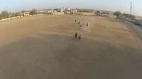
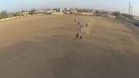
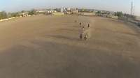
To determine how the horses are moving in the 3D scene relative to their starting orientation and location, let's analyze the sequence of images:
- Initial Position (Frames 1-3): In the first few frames, several horses and riders are positioned in the middle ground of a large dirt arena, facing generally toward the camera.
- Temporal Progression (Frames 4-18): As the video progresses, the horses consistently move closer to the camera. Their orientation remains facing forward (toward the viewer).
- Direction of Motion: Since the horses are facing the camera and moving in that same direction, their motion in the 3D scene is forward relative to their orientation. There is no significant lateral movement to the left or right, nor are they moving backward.
Therefore, the horse's location is moving forward relative to its starting orientation and location.
A
# No complex tools needed as the motion is very clear from visual inspection. # The horses are facing the camera and moving towards it. # This constitutes "moving forward" relative to their orientation. ReturnAnswer("A")
[ReturnAnswer] Answer submitted: A
Task Analysis
The objective is to determine the 3D motion of a horse relative to its own starting orientation and location. This is an object-centric spatial reasoning task.
Coordinate System Resolution: The question asks for motion relative to the horse's "starting orientation and location." This defines a local coordinate system anchored at the horse's position at the first frame:
- Forward: The direction the horse is facing at the start.
- Backward: The opposite of the starting facing direction.
- Right/Left: Perpendicular to the facing direction, relative to the horse's own perspective.
To answer this, I must determine the horse's initial 3D heading and its subsequent 3D displacement vector, then project that displacement onto the horse's local axes.
Information Needs
- Object Identification & Tracking: Precise 3D masks for the horse across the video.
- 3D Scene Geometry: A reconstruction of the scene to obtain world-space coordinates and camera poses.
- Starting Orientation: The 3D vector representing the direction the horse is facing in the first frame.
- Trajectory Data: The 3D centroids of the horse across the sequence to calculate the total displacement.
Computation Plan
-
Segmentation & Tracking:
- Use
tools.SAM3.segment_video_by_textwith the prompt "horse" to generate masks across all frames. - Verify the segmentation quality by calling
seg.visualize(fi)on the first, middle, and last frames and usingshow()to inspect them.
- Use
-
3D Reconstruction:
- Use
tools.Reconstruct.Reconstruct(InputImages)to build the 3D scene. - Extract the 3D centroids of the horse for all reconstructed frames using
seg.get_centroid_3d(recon, frame=fi, object='horse').
- Use
-
Determining Starting Orientation:
- To find the horse's initial heading, I need the vector from its tail to its nose in the first frame.
- Use
vlm.locateon the first frame (InputImages[0]) to get the normalized coordinates for the "horse's nose" and the "horse's tail". - Convert these coordinates to pixels using
tools.Geometry.normalized_to_pixel. - Use the reconstruction's depth map and intrinsics for the first frame to project these pixel coordinates into 3D world points: $\text{Pos}{nose}$ and $\text{Pos}{tail}$.
- Calculate the starting forward vector: $\vec{v}{fwd} = \text{normalize}(\text{Pos}{nose} - \text{Pos}_{tail})$.
-
Analyzing Displacement:
- Define the starting position $\vec{P}_{start}$ as the centroid at the first frame.
- Define the ending position $\vec{P}_{end}$ as the centroid at the last frame.
- Calculate the total displacement vector: $\vec{D} = \vec{P}{end} - \vec{P}{start}$.
-
Relative Motion Calculation:
- Define the horse's local coordinate system at $t=0$:
- Forward axis: $\vec{fwd} = \vec{v}_{fwd}$.
- Up axis: $\vec{up} = [0, 1, 0]$ (assuming gravity-aligned reconstruction).
- Right axis: $\vec{right} = \vec{fwd} \times \vec{up}$.
- Calculate the projections of the displacement $\vec{D}$ onto these axes:
- $\text{dist}_{fwd} = \vec{D} \cdot \vec{fwd}$
- $\text{dist}_{right} = \vec{D} \cdot \vec{right}$
- Determine the dominant direction:
- If $\text{dist}_{fwd}$ is the largest magnitude and positive $\rightarrow$ Moving forward.
- If $\text{dist}_{fwd}$ is the largest magnitude and negative $\rightarrow$ Moving backward.
- If $\text{dist}_{right}$ is the largest magnitude and positive $\rightarrow$ Moving right.
- If $\text{dist}_{right}$ is the largest magnitude and negative $\rightarrow$ Moving left.
- Define the horse's local coordinate system at $t=0$:
-
Visual Cross-Validation:
- Render a BEV plot using
recon.render_bev(masks=seg). - Use
show()to inspect the trajectory line. Compare the direction of the line (red $\rightarrow$ blue) with the horse's starting orientation observed in the frames.
- Render a BEV plot using
Verification Checklist
[
{"priority": "HIGH", "description": "Verify SAM3 masks accurately cover the horse across the sequence"},
{"priority": "HIGH", "description": "Ensure the starting orientation vector (nose-tail) is physically plausible and correctly oriented"},
{"priority": "HIGH", "description": "Confirm that the 3D centroids are stable and not jumping due to reconstruction noise"},
{"priority": "MEDIUM", "description": "Cross-check the computed relative direction with the visual trajectory in the BEV plot"},
{"priority": "LOW", "description": "Sanity-check the magnitude of the displacement (e.g., is the horse moving at a realistic speed?)"}
]
Fallbacks
- Segmentation Failure: If
segment_video_by_textfails or is noisy, I will usevlm.locateto get a bounding box in the first frame and then usetools.SAM3.segment_video_by_box. - Orientation Ambiguity: If the horse is facing directly toward or away from the camera, the nose-tail vector might be noisy. In this case, I will use
vlm.ask_with_thinkingon the first few frames to
{ "tool": "tools.SAM3.segment_video_by_text", "args": { "prompts": [ "horse" ] } }
=== Step 0 Execution Feedback === [SUCCESS] Code executed in 78.65s. [Variables] New/changed: result_0: PerFrameMask, frames=[0..89] (90 frames) [Tool Calls] 1 tool/VLM call(s) this step.
{ "tool": "show", "args": { "image": [ "result_0.visualize(0)", "result_0.visualize(45)", "result_0.visualize(89)" ] } }
[image: show_0001]
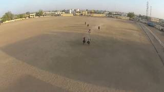
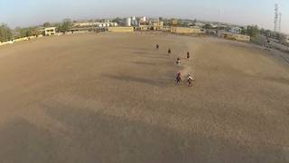
=== Step 1 Execution Feedback === [SUCCESS] Code executed in 1.89s. [Variables] New/changed: result_1: NoneType [Inline Images] 3 image(s) attached below. Labels: [result_0.visualize(0), result_0.visualize(45), result_0.visualize(89)] [show() budget] 247/250 images remaining.
=== Step 2 Execution Feedback === [ERROR] Skipped: LLM response was not in the required format.
{ "tool": "vlm.locate", "args": { "visual_input": "InputImages[0]", "question": "Give the bounding box (x1, y1, x2, y2) in 0-1000 normalized scale for the lead horse in the center of the image. Reply with ONLY the numbers." } }
[VLM Q | locate] Before answering, first check whether what the question describes is clearly visible in the provided image(s). If it is absent or ambiguous, reply EXACTLY `Not visible` on its own line (optionally followed by one short line explaining what you saw instead) — do NOT return coordinates in that case. Only if the requested target is clearly and unambiguously present, answer the request below. Request: Give the bounding box (x1, y1, x2, y2) in 0-1000 normalized scale for the lead horse in the center of the image. Reply with ONLY the numbers. [VLM A | locate] 421 533 511 560
[LLMClient] VLM attempt 1/5 failed (APIConnectionError: Connection error.), retrying...
=== Step 3 Execution Feedback === [SUCCESS] Code executed in 15.20s. [Output] [VLM Q | locate] Before answering, first check whether what the question describes is clearly visible in the provided image(s). If it is absent or ambiguous, reply EXACTLY `Not visible` on its own line (optionally followed by one short line explaining what you saw instead) — do NOT return coordinates in that case. Only if the requested target is clearly and unambiguously present, answer the request below. Request: Give the bounding box (x1, y1, x2, y2) in 0-1000 normalized scale for the lead horse in the center of the image. Reply with ONLY the numbers. [VLM A | locate] 421 533 511 560 [Warnings] [LLMClient] VLM attempt 1/5 failed (APIConnectionError: Connection error.), retrying... [Variables] New/changed: result_3: str [Tool Calls] 1 tool/VLM call(s) this step.
=== Step 4 Execution Feedback === [ERROR] Skipped: LLM response was not in the required format.
{ "tool": "tools.Geometry.normalized_to_pixel", "args": { "coords": [ 421, 533, 511, 560 ], "width": "InputImages[0].width", "height": "InputImages[0].height" } }
=== Step 5 Execution Feedback === [SUCCESS] Code executed in 0.00s. [Variables] New/changed: result_5: list, len=4 [Tool Calls] 1 tool/VLM call(s) this step.
{ "tool": "tools.SAM3.segment_video_by_box", "args": { "boxes": "[result_5]", "labels": [ "lead horse" ] } }
=== Step 7 Execution Feedback === [SUCCESS] Code executed in 7.81s. [Variables] New/changed: result_7: PerFrameMask, frames=[0..89] (90 frames) [Tool Calls] 1 tool/VLM call(s) this step.
{ "tool": "show", "args": { "image": [ "result_7.visualize(0)", "result_7.visualize(45)", "result_7.visualize(89)" ] } }
[image: show_0002]

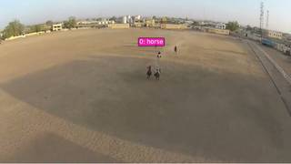
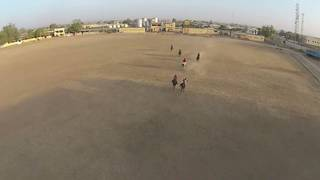
=== Step 8 Execution Feedback === [SUCCESS] Code executed in 2.29s. [Variables] New/changed: result_8: NoneType [Inline Images] 3 image(s) attached below. Labels: [result_7.visualize(0), result_7.visualize(45), result_7.visualize(89)] [show() budget] 244/250 images remaining.
=== Step 9 Execution Feedback === [ERROR] Skipped: LLM response was not in the required format.
{ "tool": "vlm.ask_with_thinking", "args": { "visual_input": "InputImages", "question": "In this video, identify the horses. At the start of the clip, which direction are they facing? Throughout the clip, in which direction do they move relative to that starting orientation (forward, backward, left, or right)?" } }
[VLM Q | thinking] In this video, identify the horses. At the start of the clip, which direction are they facing? Throughout the clip, in which direction do they move relative to that starting orientation (forward, backward, left, or right)? [VLM A | thinking] The horses are located in the center of the arena. At the start of the clip, they are facing towards the camera and continue to move forward in that direction throughout the video.
=== Step 10 Execution Feedback === [SUCCESS] Code executed in 14.25s. [Output] [VLM Q | thinking] In this video, identify the horses. At the start of the clip, which direction are they facing? Throughout the clip, in which direction do they move relative to that starting orientation (forward, backward, left, or right)? [VLM A | thinking] The horses are located in the center of the arena. At the start of the clip, they are facing towards the camera and continue to move forward in that direction throughout the video. [Variables] New/changed: result_10: str [Tool Calls] 1 tool/VLM call(s) this step.
{ "tool": "ReturnAnswer", "args": { "answer": "A" } }
[ReturnAnswer] Answer submitted: A
A
A
A
Task Analysis
The objective is to determine the 3D motion of a horse relative to its own starting orientation and location. This is a 3D spatial reasoning task requiring the determination of a displacement vector and its projection onto the object's initial heading.
Implicit Coordinate System: The question asks for motion "relative to his/her/its starting orientation." This defines an object-centric coordinate system anchored at the horse's position in the first frame.
- Forward: The direction the horse is facing at the start.
- Backward: The opposite of the starting facing direction.
- Left/Right: Perpendicular to the starting facing direction.
Information Needs
- Object Identification & Tracking: Precise segmentation masks for the horse across the video to track its 3D centroid.
- 3D Geometry: A world-space reconstruction to convert 2D masks into 3D coordinates and to obtain camera poses.
- Starting Orientation: The horse's facing direction (heading vector) in world space at the first frame.
- Displacement Vector: The 3D vector from the horse's starting centroid to its final centroid.
Computation Plan
-
Initial Visual Inspection:
- Use
show(InputImages[0])andshow(InputImages[-1])to identify the horse and get a qualitative sense of its starting orientation and overall movement.
- Use
-
Segmentation and Tracking:
- Segment the horse across all frames using
tools.SAM3.segment_video_by_text(prompts=["horse"], labels=["horse"]). - Verification: Use
seg.visualize(fi)on the first, middle, and last frames andshow()them to ensure the horse is correctly tracked.
- Segment the horse across all frames using
-
3D Scene Reconstruction:
- Perform 3D reconstruction using
tools.Reconstruct.Reconstruct(InputImages).
- Perform 3D reconstruction using
-
3D Trajectory Extraction:
- For every frame index
fiinseg.frame_indices, compute the 3D centroid:c = seg.get_centroid_3d(recon, frame=fi, object='horse'). - Store these centroids in a list to define the horse's 3D path.
- Calculate the total displacement vector: $\vec{d} = \text{centroid}{final} - \text{centroid}{start}$.
- For every frame index
-
Determining Starting Orientation:
- Use
vlm.ask_with_thinkingonInputImages[0]to determine the horse's facing direction relative to the camera (e.g., "Is the horse facing left, right, towards the camera, or away?"). - Use the camera pose at frame 0 (
recon.extrinsics[fi_0]) to convert this relative direction into a world-space heading vector $\vec{h}$. - Alternative: If the horse's head and tail are clearly visible, compute the vector from tail to head in 3D using
seg.get_masked_pointsfor specific parts if possible, or rely on the VLM's directional description.
- Use
-
Relative Motion Calculation:
- Forward/Backward: Compute the dot product of the displacement vector $\vec{d}$ and the heading vector $\vec{h}$: $\text{score}_{fwd} = \vec{d} \cdot \vec{h}$.
- $\text{score}_{fwd} > 0 \implies$ Forward
- $\text{score}_{fwd} < 0 \implies$ Backward
- Left/Right: Define a "right" vector $\vec{r}$ by taking the cross product of the heading vector $\vec{h}$ and the world-up vector $[0, 1, 0]$. Compute $\text{score}_{right} = \vec{d} \cdot \vec{r}$.
- $\text{score}_{right} > 0 \implies$ Right
- $\text{score}_{right} < 0 \implies$ Left
- Compare the magnitudes of $|\text{score}{fwd}|$ and $|\text{score}{right}|$ to determine the dominant direction of motion.
- Forward/Backward: Compute the dot product of the displacement vector $\vec{d}$ and the heading vector $\vec{h}$: $\text{score}_{fwd} = \vec{d} \cdot \vec{h}$.
-
Visual Cross-Validation:
- Render a Bird's Eye View (BEV) plot:
recon.render_bev(masks=seg). - Inspect the trajectory line (red $\to$ blue). Compare the direction of this line with the horse's starting orientation seen in
InputImages[0]to confirm the calculated result.
- Render a Bird's Eye View (BEV) plot:
Verification Checklist
[
{"priority": "HIGH", "description": "Verify the horse is correctly segmented and tracked across all frames using visualize()"},
{"priority": "HIGH", "description": "Ensure the starting orientation (heading vector) is correctly identified relative to the world frame"},
{"priority": "HIGH", "description": "Confirm the displacement vector is calculated using absolute 3D centroids from the reconstruction"},
{"priority": "MEDIUM", "description": "Cross-check the calculated relative direction with the BEV trajectory plot"},
{"priority": "LOW", "description": "Sanity-check the magnitude of the horse's movement to ensure it is physically plausible"}
]
Fallbacks
- Segmentation Failure: If
segment_video_by_textfails to capture the horse, usevlm.locateon the first frame to get a bounding box and usetools.SAM3.segment_video_by_box. - Reconstruction Noise: If 3D centroids are unstable, use
np.medianover a sliding window of frames or filter points byrecon.confidencebefore computing centroids. - Orientation Ambiguity: If the horse's facing direction is unclear from a single frame, use
vlm.ask_with_thinkingacross the first few frames to establis
# Show the first and last frames to identify the horse and its general movement show([InputImages[0], InputImages[-1]])
[image: show_0001]
=== Step 0 Execution Feedback === [SUCCESS] Code executed in 4.36s. [Inline Images] 2 image(s) attached below. Labels: [InputImages[0], InputImages[-1]] [show() budget] 248/250 images remaining.
# Segment all horses in the video seg = tools.SAM3.segment_video_by_text(prompts=["horse"], labels=["horse"]) # Verify segmentation on first, middle, and last frames fi_start = seg.frame_indices[0] fi_mid = seg.frame_indices[len(seg.frame_indices)//2] fi_end = seg.frame_indices[-1] # Visualize masks vis_start = seg.visualize(fi_start) vis_mid = seg.visualize(fi_mid) vis_end = seg.visualize(fi_end) show([ InputImages[0], vis_start, InputImages[len(InputImages)//2], vis_mid, InputImages[-1], vis_end ]) # Print number of objects detected print(f"Number of horses detected: {seg.num_objects}")
[image: show_0002] Number of horses detected: 1
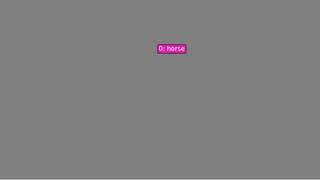

=== Step 1 Execution Feedback ===
[SUCCESS] Code executed in 12.16s.
[Output]
Number of horses detected: 1
[Variables] New/changed:
seg: PerFrameMask, frames=[0..89] (90 frames)
fi_start: int
fi_mid: int
fi_end: int
vis_start: VisualFeedback
vis_mid: VisualFeedback
vis_end: VisualFeedback
[Inline Images] 6 image(s) attached below.
Labels: [
InputImages[0], vis_start,
InputImages[len(InputImages)//2], vis_mid,
InputImages[-1], vis_end
]
[Tool Calls] 1 tool/VLM call(s) this step.
[show() budget] 242/250 images remaining.# 1. Locate the horse in the foreground on the left bbox_norm_str = vlm.locate(InputImages[0], "Give the bounding box (x1, y1, x2, y2) in 0-1000 normalized scale for the horse in the foreground on the left. Reply with ONLY the numbers.") print(f"VLM Bbox string: {bbox_norm_str}") # 2. Parse and convert normalized coordinates to pixels W, H = InputImages[0].width, InputImages[0].height try: # Handle potential non-numeric characters in the response import re nums = re.findall(r"[-+]?\d*\.\d+|\d+", bbox_norm_str) bbox_norm = [float(x) for x in nums] if len(bbox_norm) == 4: px_bbox = tools.Geometry.normalized_to_pixel(bbox_norm, W, H) print(f"Pixel Bbox: {px_bbox}") # 3. Track this horse across the video seg = tools.SAM3.segment_video_by_box(boxes=[px_bbox], labels=["horse"]) # 4. Verify the segmentation fi_start = seg.frame_indices[0] fi_mid = seg.frame_indices[len(seg.frame_indices)//2] fi_end = seg.frame_indices[-1] vis_start = seg.visualize(fi_start) vis_mid = seg.visualize(fi_mid) vis_end = seg.visualize(fi_end) show([ InputImages[0], vis_start, InputImages[len(InputImages)//2], vis_mid, InputImages[-1], vis_end ]) print(f"Successfully tracked horse. Number of objects: {seg.num_objects}") else: print(f"Failed to parse 4 coordinates from VLM response: {bbox_norm_str}") except Exception as e: print(f"Error during segmentation: {e}")
[VLM Q | locate] Before answering, first check whether what the question describes is clearly visible in the provided image(s). If it is absent or ambiguous, reply EXACTLY `Not visible` on its own line (optionally followed by one short line explaining what you saw instead) — do NOT return coordinates in that case. Only if the requested target is clearly and unambiguously present, answer the request below. Request: Give the bounding box (x1, y1, x2, y2) in 0-1000 normalized scale for the horse in the foreground on the left. Reply with ONLY the numbers. [VLM A | locate] 415, 505, 486, 534 VLM Bbox string: 415, 505, 486, 534 Pixel Bbox: [318.71999999999997, 218.16, 373.248, 230.68800000000002] [image: show_0003] Successfully tracked horse. Number of objects: 1

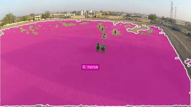

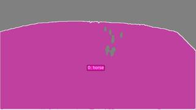

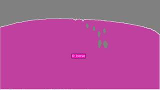
=== Step 3 Execution Feedback ===
[SUCCESS] Code executed in 103.49s.
[Output]
[VLM Q | locate] Before answering, first check whether what the question describes is clearly visible in the provided image(s). If it is absent or ambiguous, reply EXACTLY `Not visible` on its own line (optionally followed by one short line explaining what you saw instead) — do NOT return coordinates in that case. Only if the requested target is clearly and unambiguously present, answer the request below.
Request: Give the bounding box (x1, y1, x2, y2) in 0-1000 normalized scale for the horse in the foreground on the left. Reply with ONLY the numbers.
[VLM A | locate] 415, 505, 486, 534
VLM Bbox string: 415, 505, 486, 534
Pixel Bbox: [318.71999999999997, 218.16, 373.248, 230.68800000000002]
Successfully tracked horse. Number of objects: 1
[Variables] New/changed:
bbox_norm_str: str
re: module
nums: list, len=4
px_bbox: list, len=4
bbox_norm: list, len=4
[Inline Images] 6 image(s) attached below.
Labels: [
InputImages[0], vis_start,
InputImages[len(InputImages)//2], vis_mid,
InputImages[-1], vis_end
]
[Tool Calls] 3 tool/VLM call(s) this step.
[show() budget] 236/250 images remaining.# 1. Locate the center point of the horse in the foreground on the left point_norm_str = vlm.locate(InputImages[0], "Give the (x, y) center coordinates in 0-1000 normalized scale for the horse in the foreground on the left. Reply with ONLY the numbers.") print(f"VLM Point string: {point_norm_str}") # 2. Parse and convert normalized coordinates to pixels W, H = InputImages[0].width, InputImages[0].height try: import re nums = re.findall(r"[-+]?\d*\.\d+|\d+", point_norm_str) point_norm = [float(x) for x in nums] if len(point_norm) == 2: px_point = tools.Geometry.normalized_to_pixel(point_norm, W, H) print(f"Pixel Point: {px_point}") # 3. Track this horse across the video using point prompt # points_per_object is a list of lists of points: [[ [x, y] ]] # point_labels_per_object is a list of lists of labels: [[ 1 ]] seg = tools.SAM3.segment_video_by_points( points_per_object=[[px_point]], point_labels_per_object=[[1]], labels=["horse"] ) # 4. Verify the segmentation fi_start = seg.frame_indices[0] fi_mid = seg.frame_indices[len(seg.frame_indices)//2] fi_end = seg.frame_indices[-1] vis_start = seg.visualize(fi_start) vis_mid = seg.visualize(fi_mid) vis_end = seg.visualize(fi_end) show([ InputImages[0], vis_start, InputImages[len(InputImages)//2], vis_mid, InputImages[-1], vis_end ]) print(f"Successfully tracked horse. Number of objects: {seg.num_objects}") else: print(f"Failed to parse 2 coordinates from VLM response: {point_norm_str}") except Exception as e: print(f"Error during segmentation: {e}")
[VLM Q | locate] Before answering, first check whether what the question describes is clearly visible in the provided image(s). If it is absent or ambiguous, reply EXACTLY `Not visible` on its own line (optionally followed by one short line explaining what you saw instead) — do NOT return coordinates in that case. Only if the requested target is clearly and unambiguously present, answer the request below. Request: Give the (x, y) center coordinates in 0-1000 normalized scale for the horse in the foreground on the left. Reply with ONLY the numbers. [VLM A | locate] 520 453 VLM Point string: 520 453 Pixel Point: [399.36, 195.696] [image: show_0004] Successfully tracked horse. Number of objects: 1

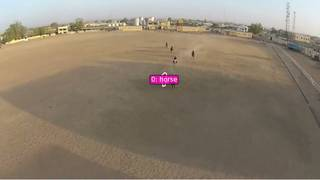

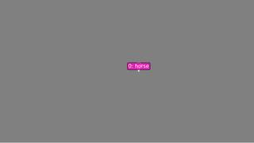

=== Step 4 Execution Feedback ===
[SUCCESS] Code executed in 18.23s.
[Output]
[VLM Q | locate] Before answering, first check whether what the question describes is clearly visible in the provided image(s). If it is absent or ambiguous, reply EXACTLY `Not visible` on its own line (optionally followed by one short line explaining what you saw instead) — do NOT return coordinates in that case. Only if the requested target is clearly and unambiguously present, answer the request below.
Request: Give the (x, y) center coordinates in 0-1000 normalized scale for the horse in the foreground on the left. Reply with ONLY the numbers.
[VLM A | locate] 520 453
VLM Point string: 520 453
Pixel Point: [399.36, 195.696]
Successfully tracked horse. Number of objects: 1
[Variables] New/changed:
point_norm_str: str
point_norm: list, len=2
px_point: list, len=2
nums: list, len=2
[Inline Images] 6 image(s) attached below.
Labels: [
InputImages[0], vis_start,
InputImages[len(InputImages)//2], vis_mid,
InputImages[-1], vis_end
]
[Tool Calls] 3 tool/VLM call(s) this step.
[show() budget] 230/250 images remaining.# Get the intersection of frames available in both segmentation and reconstruction common_frames = sorted(list(set(seg.frame_indices) & set(recon.frame_indices))) print(f"Common frames for 3D analysis: {common_frames}") # Extract the 3D trajectory trajectory_3d = [] valid_frames = [] for fi in common_frames: centroid = seg.get_centroid_3d(recon, frame=fi, object=0) if centroid is not None: trajectory_3d.append(centroid) valid_frames.append(fi) trajectory_3d = np.array(trajectory_3d) print(f"Successfully extracted 3D centroids for {len(trajectory_3d)} frames.") if len(trajectory_3d) >= 2: start_pos = trajectory_3d[0] end_pos = trajectory_3d[-1] displacement = end_pos - start_pos print(f"Start position: {start_pos}") print(f"End position: {end_pos}") print(f"Total displacement vector: {displacement}") print(f"Total distance moved: {np.linalg.norm(displacement):.2f} meters") else: print("Not enough 3D points to compute displacement.")
Common frames for 3D analysis: [0, 6, 12, 18, 24, 30, 36, 42, 48, 54, 60, 66, 72, 78, 84] Successfully extracted 3D centroids for 15 frames. Start position: [ 0.2795395 1.6255766 -3.8305395] End position: [ 1.080781 3.3300242 -7.225006 ] Total displacement vector: [ 0.8012415 1.7044476 -3.3944666] Total distance moved: 3.88 meters
=== Step 6 Execution Feedback === [SUCCESS] Code executed in 0.07s. [Output] Common frames for 3D analysis: [0, 6, 12, 18, 24, 30, 36, 42, 48, 54, 60, 66, 72, 78, 84] Successfully extracted 3D centroids for 15 frames. Start position: [ 0.2795395 1.6255766 -3.8305395] End position: [ 1.080781 3.3300242 -7.225006 ] Total displacement vector: [ 0.8012415 1.7044476 -3.3944666] Total distance moved: 3.88 meters [Variables] New/changed: common_frames: list, len=15 valid_frames: list, len=15 start_pos: ndarray, shape=(3,), dtype=float32 end_pos: ndarray, shape=(3,), dtype=float32 displacement: ndarray, shape=(3,), dtype=float32 trajectory_3d: ndarray, shape=(15, 3), dtype=float32
# 1. Render BEV to visualize horse trajectory and camera motion bev_vis = recon.render_bev(masks=seg, ego_trajectory=True) show(bev_vis) # 2. Determine horse's facing direction in the first frame # The horse is facing the camera, so its heading is roughly opposite to the camera's forward vector. facing_desc = vlm.ask_with_thinking(InputImages[0], "In the first frame, which direction is the horse in the foreground on the left facing? Is it facing towards the camera, away from the camera, or to the side?") print(f"VLM Facing Description: {facing_desc}") # 3. Quantitative analysis # Camera pose at frame 0 pose_0 = recon.extrinsics[common_frames[0]] cam_fwd_0 = pose_0[:3, 2] # Camera forward vector in world space # If horse is facing the camera, its heading vector h is -cam_fwd_0 h = -cam_fwd_0 h = h / np.linalg.norm(h) # Displacement vector from start to end d = displacement # Forward/Backward score: dot product of displacement and heading score_fwd = np.dot(d, h) # Right vector: h cross world-up [0, 1, 0] world_up = np.array([0, 1, 0]) r = np.cross(h, world_up) r = r / np.linalg.norm(r) # Right/Left score: dot product of displacement and right vector score_right = np.dot(d, r) print(f"Forward score: {score_fwd:.3f}") print(f"Right score: {score_right:.3f}") # Determine dominant direction if abs(score_fwd) > abs(score_right): direction = "Forward" if score_fwd > 0 else "Backward" else: direction = "Right" if score_right > 0 else "Left" print(f"Dominant relative direction: {direction}")
[image: show_0005] [VLM Q | thinking] In the first frame, which direction is the horse in the foreground on the left facing? Is it facing towards the camera, away from the camera, or to the side? [VLM A | thinking] The horse in the foreground on the left is facing towards the camera. VLM Facing Description: The horse in the foreground on the left is facing towards the camera. Forward score: -3.394 Right score: -0.801 Dominant relative direction: Backward
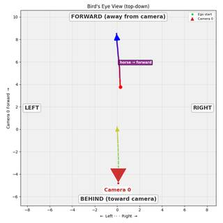
=== Step 7 Execution Feedback === [SUCCESS] Code executed in 5.18s. [Output] [VLM Q | thinking] In the first frame, which direction is the horse in the foreground on the left facing? Is it facing towards the camera, away from the camera, or to the side? [VLM A | thinking] The horse in the foreground on the left is facing towards the camera. VLM Facing Description: The horse in the foreground on the left is facing towards the camera. Forward score: -3.394 Right score: -0.801 Dominant relative direction: Backward [Variables] New/changed: bev_vis: VisualFeedback facing_desc: str pose_0: ndarray, shape=(4, 4), dtype=float64 cam_fwd_0: ndarray, shape=(3,), dtype=float64 h: ndarray, shape=(3,), dtype=float64 d: ndarray, shape=(3,), dtype=float32 score_fwd: float64, shape=(), dtype=float64 world_up: ndarray, shape=(3,), dtype=int64 r: ndarray, shape=(3,), dtype=float64 score_right: float64, shape=(), dtype=float64 direction: str [Inline Images] 1 image(s) attached below. Labels: bev_vis [Tool Calls] 1 tool/VLM call(s) this step. [show() budget] 229/250 images remaining.
ReturnAnswer("D")
[ReturnAnswer] Answer submitted: D